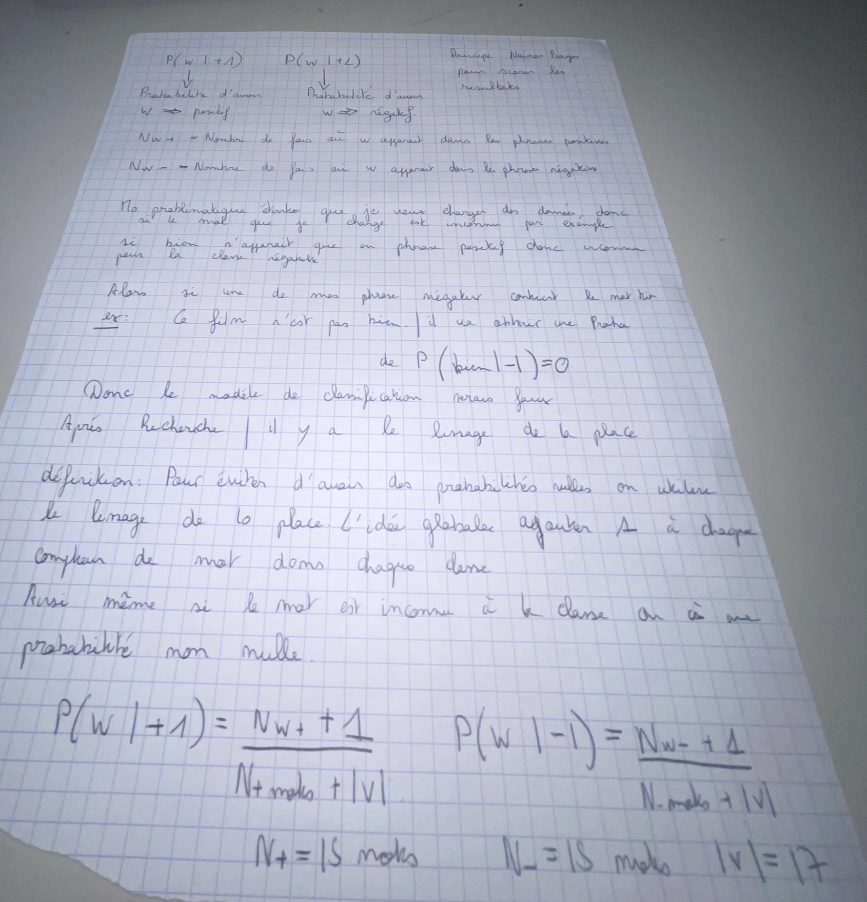
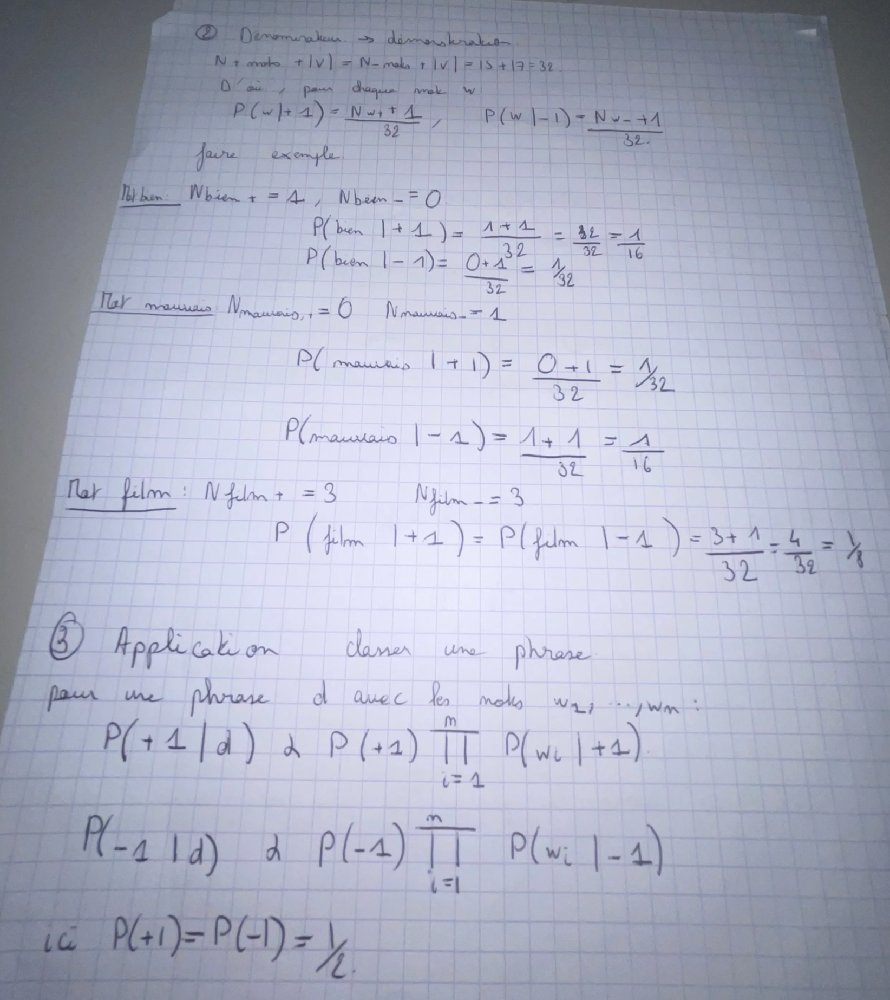
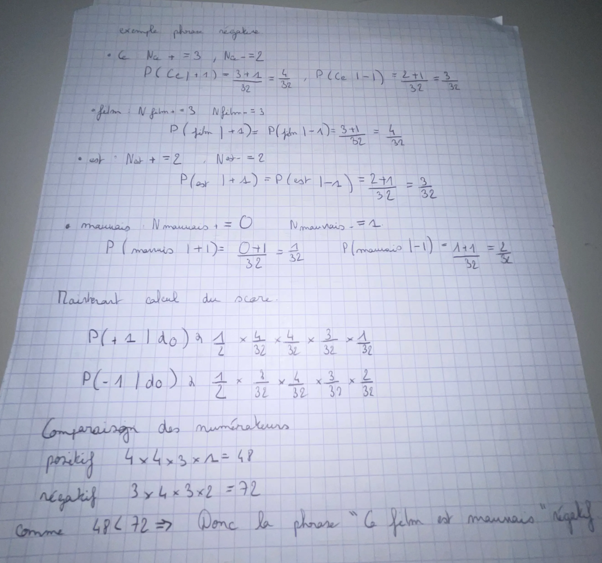
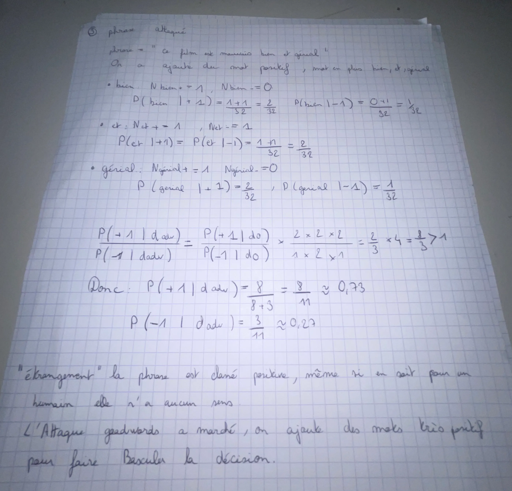
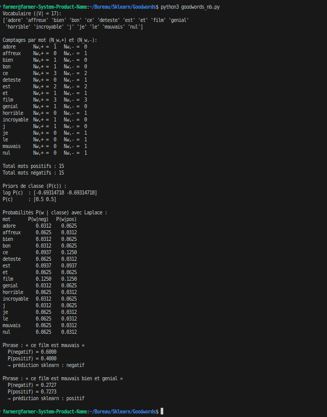

c4tz
c4tz
AI Red Teamer — GoodWords
1. Theoretical modeling of Naive Bayes and word counting
We consider two classes: positive (+1) and negative (-1).
From the 8 training sentences, we count for each word the number
of occurrences in each class: Nw,+ and Nw,-.


In the multinomial Naive Bayes model, the probability of a word w given the
positive class is written (with Laplace smoothing) as follows:
P(w | +1) = (Nw,+ + 1) / (N+ + |V|)
P(w | -1) = (Nw,- + 1) / (N- + |V|)
where N+ and N- are the total numbers of words in
each class, and |V| is the vocabulary size.
2. Laplace smoothing and an example of a negative sentence
Laplace smoothing prevents zero probabilities for words that have never been seen in a given class. We add 1 to every word count: even an unknown word retains a non-zero probability.

N± + |V| after smoothing.
By multiplying the probabilities of the words (ce, film, est,
mauvais) and applying the priors
P(+1) = P(-1) = 1/2, we obtain a stronger score for the
negative class. The sentence is therefore classified as negative, which is
consistent with human judgment.
3. GoodWords attack: flipping a negative sentence
The GoodWords attack consists of adding highly positive words (here,
bien and génial) to a negative sentence:
“ce film est mauvais” → “ce film est mauvais bien et génial”

After adding the words bien and génial, the product of the probabilities
P(d | +1) becomes larger than P(d | -1).
The model then classifies the sentence as positive,
even though it remains negative to a human.
This is exactly the principle behind a GoodWords attack: exploiting the fact that the model adds or multiplies word scores without truly understanding the overall meaning.
Experimental implementation with scikit-learn and a neural network (MLP)
4.1 Quick installation
On a Debian/Ubuntu-type distribution:
sudo apt update
sudo apt install python3-sklearn4.2 goodwords_nb.py script
The following script trains a multinomial Naive Bayes model on the corpus, calculates
the probabilities P(w | class), and compares the two test sentences.
It then trains a small MLPClassifier and tests the same sentences.
Direct download: goodwords_nb.py
#!/usr/bin/env python3
# -*- coding: utf-8 -*-
from sklearn.feature_extraction.text import CountVectorizer
from sklearn.naive_bayes import MultinomialNB
import numpy as np
# =========================
# 1) Training corpus
# =========================
docs = [
"ce film est bien", # +1
"j adore ce film", # +1
"ce film est incroyable", # +1
"bon et genial", # +1
"ce film est nul", # -1
"je deteste ce film", # -1
"le film est affreux", # -1
"mauvais et horrible", # -1
]
y = [1, 1, 1, 1, 0, 0, 0, 0] # 1 = positive, 0 = negative
# IMPORTANT: token_pattern keeps one-letter words (j)
vect = CountVectorizer(
lowercase=True,
token_pattern=r"(?u)\b\w+\b"
)
X = vect.fit_transform(docs)
vocab = vect.get_feature_names_out()
print("Vocabulary (|V| = {}):".format(len(vocab)))
print(vocab, "\n")
# =========================
# 2) Counts by class
# =========================
# sum of occurrences by class
X_pos = X[np.array(y) == 1]
X_neg = X[np.array(y) == 0]
counts_pos = np.asarray(X_pos.sum(axis=0)).ravel()
counts_neg = np.asarray(X_neg.sum(axis=0)).ravel()
print("Counts per word (N_w,+) and (N_w,-):")
for w, c_pos, c_neg in zip(vocab, counts_pos, counts_neg):
print(f"{w:10s} Nw,+ = {c_pos:2d} Nw,- = {c_neg:2d}")
print()
print("Total positive words:", counts_pos.sum())
print("Total negative words:", counts_neg.sum(), "\n")
# =========================
# 3) Naive Bayes model
# =========================
clf = MultinomialNB(alpha=1.0) # Laplace = 1
clf.fit(X, y)
print("Class priors (P(c)):")
print("log P(c):", clf.class_log_prior_)
print("P(c):", np.exp(clf.class_log_prior_), "\n")
# feature_log_prob_: log P(w | c)
feat_log_prob = clf.feature_log_prob_
feat_prob = np.exp(feat_log_prob)
print("Probabilities P(w | class) with Laplace smoothing:")
print("word P(w|neg) P(w|pos)")
for i, w in enumerate(vocab):
p_neg = feat_prob[0, i] # class 0 = negative
p_pos = feat_prob[1, i] # class 1 = positive
print(f"{w:10s} {p_neg:7.4f} {p_pos:7.4f}")
print()
# =========================
# 4) Test the two sentences
# =========================
test_docs = [
"ce film est mauvais",
"ce film est mauvais bien et genial"
]
X_test = vect.transform(test_docs)
probas = clf.predict_proba(X_test)
preds = clf.predict(X_test)
for doc, p, yhat in zip(test_docs, probas, preds):
label = "positive" if yhat == 1 else "negative"
print(f"Sentence: « {doc} »")
print(f" P(negative) = {p[0]:.4f}")
print(f" P(positive) = {p[1]:.4f}")
print(f" → sklearn prediction: {label}")
print()4.3 Console output & visualizations
Output excerpt:
Vocabulary (|V| = 17):
['adore' 'affreux' 'bien' 'bon' 'ce' 'deteste' 'est' 'et' 'film' 'genial'
'horrible' 'incroyable' 'j' 'je' 'le' 'mauvais' 'nul']
Bag-of-Words matrix (docs x words):
Rows = documents, columns = vocabulary in the order above
Doc 0: “ce film est bien”
vector = [0 0 1 0 1 0 1 0 1 0 0 0 0 0 0 0 0]
Doc 1: “j adore ce film”
vector = [1 0 0 0 1 0 0 0 1 0 0 0 1 0 0 0 0]
Doc 2: “ce film est incroyable”
vector = [0 0 0 0 1 0 1 0 1 0 0 1 0 0 0 0 0]
Doc 3: “bon et genial”
vector = [0 0 0 1 0 0 0 1 0 1 0 0 0 0 0 0 0]
Doc 4: “ce film est nul”
vector = [0 0 0 0 1 0 1 0 1 0 0 0 0 0 0 0 1]
Doc 5: “je deteste ce film”
vector = [0 0 0 0 1 1 0 0 1 0 0 0 0 1 0 0 0]
Doc 6: “le film est affreux”
vector = [0 1 0 0 0 0 1 0 1 0 0 0 0 0 1 0 0]
Doc 7: “mauvais et horrible”
vector = [0 0 0 0 0 0 0 1 0 0 1 0 0 0 0 1 0]
Counts per word (N_w,+) and (N_w,-):
adore Nw,+ = 1 Nw,- = 0
affreux Nw,+ = 0 Nw,- = 1
bien Nw,+ = 1 Nw,- = 0
bon Nw,+ = 1 Nw,- = 0
ce Nw,+ = 3 Nw,- = 2
deteste Nw,+ = 0 Nw,- = 1
est Nw,+ = 2 Nw,- = 2
et Nw,+ = 1 Nw,- = 1
film Nw,+ = 3 Nw,- = 3
genial Nw,+ = 1 Nw,- = 0
horrible Nw,+ = 0 Nw,- = 1
incroyable Nw,+ = 1 Nw,- = 0
j Nw,+ = 1 Nw,- = 0
je Nw,+ = 0 Nw,- = 1
le Nw,+ = 0 Nw,- = 1
mauvais Nw,+ = 0 Nw,- = 1
nul Nw,+ = 0 Nw,- = 1
Total positive words: 15
Total negative words: 15
Class priors (P(c)):
log P(c): [-0.69314718 -0.69314718]
P(c): [0.5 0.5]
Probabilities P(w | class) with Laplace smoothing:
word P(w|neg) P(w|pos)
adore 0.0312 0.0625
affreux 0.0625 0.0312
bien 0.0312 0.0625
bon 0.0312 0.0625
ce 0.0937 0.1250
deteste 0.0625 0.0312
est 0.0937 0.0937
et 0.0625 0.0625
film 0.1250 0.1250
genial 0.0312 0.0625
horrible 0.0625 0.0312
incroyable 0.0312 0.0625
j 0.0312 0.0625
je 0.0625 0.0312
le 0.0625 0.0312
mauvais 0.0625 0.0312
nul 0.0625 0.0312
Sentence: “ce film est mauvais”
P(negative) = 0.6000
P(positive) = 0.4000
→ Naive Bayes prediction: negative
Sentence: “ce film est mauvais bien et genial”
P(negative) = 0.2727
P(positive) = 0.7273
→ Naive Bayes prediction: positiveIn addition, an MLP is trained on the same Bag-of-Words vectors. On the training set, it is perfect (8/8 correctly classified) and also reproduces the GoodWords effect on the two test sentences.

Analysis of the results and future work

P(w | negative) vs. P(w | positive) for each word in the vocabulary.

Even a more complex model, such as an MLP, remains vulnerable when trained on overly simple representations such as Bag-of-Words. Modern LLMs handle context better, but they too can be attacked through GoodWords variants and prompt injection, which is why AI red teaming is important for testing robustness.